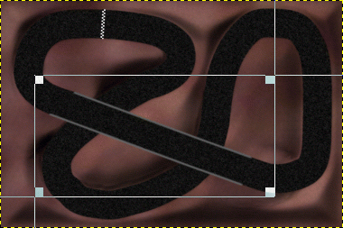
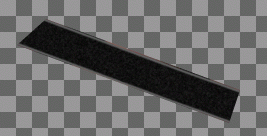

10
|
|
|
Designer Manual for - «Trophy» |


While doing art works, it's strongly recommended to save the whole track frequently. Please use the Gimp format ".xcf" for doing so. xcf saves your work as you've made it. It saves all layers and selections.
Before you can use your track with Trophy, you must save two or three different files: The visual map, the function map and the bridges if your track contains bridges.
You must save all these files into the same directory. The path is '
To save the visual map, simple delete all layers except the 'vmap' layer. Then save the image as 'vmap.tga'. Place this file into you track path.
Load the original xcf file again.
Before saving the function map, please assure, that the mode of the layers 'fields', 'low_level_collision', 'high_level_collision' and 'lift' is 'Addition' ('Layers & Channels' box). The mode of the layer 'fmap' which is the lowest layer of the function map must be 'Normal'. Delete now the layer 'vmap' and merge the remaining layers to one layer. To do so, right-click on a layer name in the 'Layers & Channels' box and choose 'Merge Visible Layers'. Save now the drawing as 'fmap.tga' into the track path.
Bridges are a special part of the visual map. However, as they have to be drawn between the players under and those on the bridge, bridges must reside in a separate file.
Load your 'vmap.tga' file. Crop the image to the minimum size which still contains all bridges. Note that you need to know the top left position of the crop area later. It's a good idea to note it somewhere.
|  |
|
Fig. 10: Crop the image to the smallest area which still contains all bridges. |
In the cropped image, erase all parts which don't belong to a bridge.
|  |
|
Fig. 11: Erase parts around bridges. |
Save this image to your track path with the name 'bridge.tga'.
Trophy shows a thumbnail preview of each track in the track selection page. Therefore you must provide a thumbnail file in your track path.
Load the 'vmap' of your track. Scale it to the size of 150x92. If your track has another size ratio, it's up to you if you want to leave parts of the thumbnail black or slightly change the image ratio.
Save the image as 'thumb.tga' to your track path.

[
Contents |
First Page |
Previous Page |
Home
| Next Page |
Last Page
]
[ 1 | 2 | 3 | 4 | 5 | 6 | 7 | 8 | 9 | 10 | 11 | 12 ]
Copyright © by Andrew Mustun 2000. All rights reserved.
This Manual was created with ManStyle.